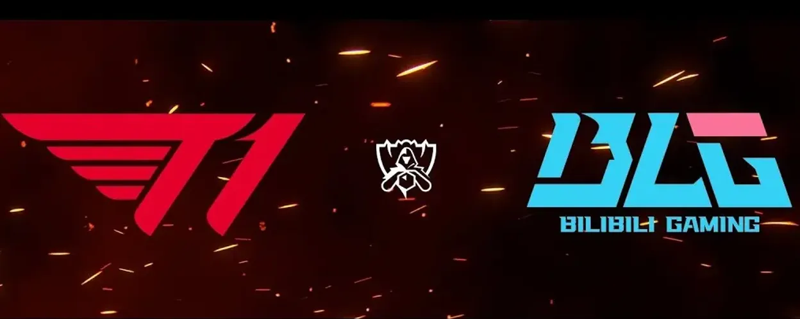
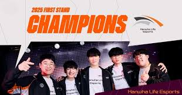
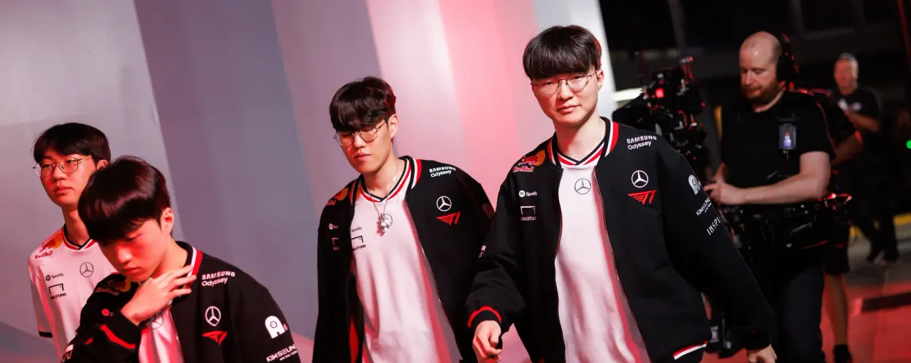

Retrouvez ici tous les articles publiés sur l’actualité League of Legends et l’e-sport francophone.

MSI 2025 : Gen.G écrase tout, G2 s'accroche mais chute en demi-finale
Gen.G a dominé le tournoi du début à la fin, s’imposant en grande finale contre JDG. G2, dernier espoir européen, s’incline avec les honneurs en demi-finale face aux Coréens. Une performance encourageante, mais toujours pas de finale pour l'Europe.
Lire l’article

LEC : BDS en tête, Fnatic surprend, Vitality inquiète
À mi-parcours du Summer Split, l'équipe BDS impressionne avec un jeu collectif propre. Fnatic retrouve des couleurs tandis que Vitality accumule les défaites, relançant les doutes sur sa structure.
Lire l’article

Karmine Corp vs Solary : Le classico LFL fait encore des étincelles
Dans une ambiance survoltée, Karmine Corp et Solary ont livré un match intense. Victoire de KC, mais les deux équipes restent proches au classement. L'engouement des fans ne faiblit pas.
Lire l’article

T1 vs BLG : L’affrontement titanesque du MSI 2025 tourne en démonstration
Dans une série à sens unique, T1 a littéralement surclassé Bilibili Gaming (3‑0) en Upper Bracket du MSI 2025 ce 5 juillet à Vancouver. Portée par un Faker chirurgical et un Doran dominateur sur la toplane, l’équipe coréenne a imposé son tempo dès la draft, puis asphyxié la map par un jeu macro d’une précision clinique. Que ce soit via les compositions engageantes centrées autour de Vi, Rumble ou Gwen, ou par la supériorité en teamfights, chaque partie a été contrôlée de bout en bout. Gumayusi, intenable sur Caitlyn, et Oner, constant sur les timings d’objectifs, ont également pesé dans une série bouclée en à peine une heure trente. Avec plus d’1,17 million de viewers au pic d’audience, cette série confirme l’hégémonie coréenne sur la scène internationale. T1 décroche ainsi son ticket pour la finale du winner bracket face à Gen.G, pendant que BLG est repoussé en lower bracket, au pied du mur.
Lire l’article
La LCP explose les compteurs : +85 % d’audience pour la mi-saison 2025
LCP (League of Legends Championship Pacific) a explosé ses records lors de la phase de mi-saison 2025 : avec un pic à 483 444 spectateurs, l’audience a grimpé de 85 % par rapport au split précédent, devenant ainsi l’événement LoL régulier le plus regardé de l’histoire du Pacifique.Si le choc entre CTBC Flying Oyster et GAM Esports a attiré le plus grand public, la moyenne reste un enjeu : malgré un engagement en fin de split, la vue globale n’a augmenté que légèrement, soulignant l’importance de maintenir l’attention tout au long de l’événement
Lire l’article

First Stand : KCorp chute en finale face à Hanwha, le format révolutionne la draft
Le tout premier First Stand Tournament, disputé à Séoul du 10 au 16 mars 2025, a marqué le début d’une nouvelle ère avec le format inédit "Fearless Draft", où chaque champion ne peut être joué qu’une seule fois par série. En finale, Hanwha Life Esports a terrassé Karmine Corp (3‑1), décrochant son premier titre international, grâce à un sacre royal orchestré par "Zeus" et "Zeka". L’introduction de ce format tactique ouvre de nombreuses pistes d’analyse sur la draft et la profondeur de ban/pick.
Lire l’article

MSI 2025 : les playoffs explosent les audiences avec 1,17 million de spectateurs
Les playoffs du Mid-Season Invitational 2025 à Vancouver ont atteint des sommets historiques : la rencontre Gen.G vs G2 a culminé à 1 172 000 spectateurs, battant le précédent record de plus de 40 000 viewers. Cette performance a été suivie immédiatement par l’entrée en scène de T1, dont le duel contre CTBC Flying Oyster a encore pulvérisé les records, culminant autour de 1 670 000 viewers, une montée spectaculaire qui reflète l’impact massif des play‑offs 2025 .
Lire l’article

Ryze, Vi, Fiddle… Ce que change (vraiment) le patch 25.13 avant les playoffs
Déployé le 17 juin 2025, le patch 25.13 propose des nerfs ciblés (Ryze, Twisted Fate, Vi…) pour tempérer les champions trop performants, tout en soutenant quelques picks sous-estimés.Riot Games justifie ces changements légers par une méta jugée globalement équilibrée, et vise à éviter qu’un champion ne domine outrageusement le global pool, notamment en tournoi.À surveiller : les performances de Ryze en phase de groupe MSI, désormais légèrement limitées.
Lire l’article